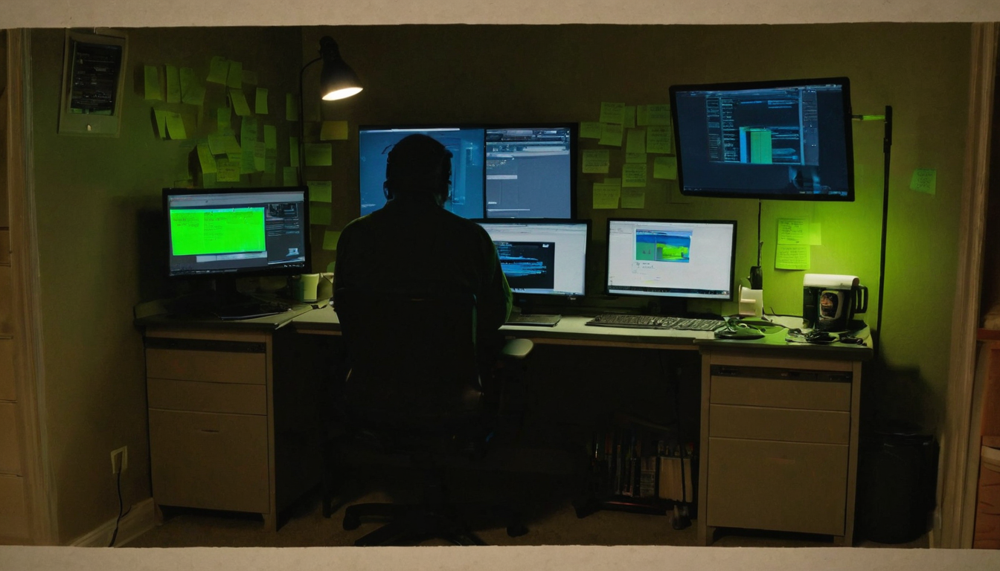
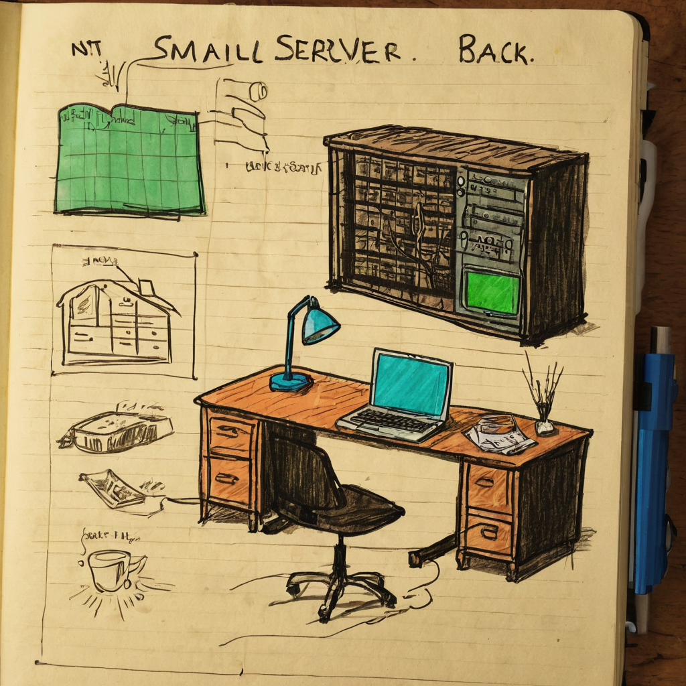

Most posts about crypto prices are noise. This one caught my eye because it wasn't trying to sell anything, hype anything, or predict anything. It was just someone being honest about being a little tired, and still choosing to hold.
@ArtBoss007 posted that XCH has stabilized around $1.40. They said they're tired of waiting for it to jump, but made clear they aren't selling their XCH or their NFTs. The post included an image and the usual hashtags (#CHIA, $XCH, #OneMarket, #NFT), but no links to a project, dashboard, or article. It's a short, personal check-in, the kind of post that shows up in the timeline between all the louder ones.

Price talk is easy to scroll past, but holder sentiment is actually useful signal, especially in a smaller ecosystem like Chia's. When someone says a price has "stabilized" instead of "pumped" or "dumped," that's a different kind of update. It's not exciting, but it's real. And the decision to keep holding through a flat period, instead of flipping for a quick exit, says something about how people who are actually in this space day to day think about it versus how it gets treated as a speculative asset from the outside.
This also touches on something bigger than one holder's portfolio: the gap between price action and actual ecosystem activity. Chia's value as a project was never just about the token chart. It's about the farming model, the NFT tooling, the datalayer work, and the people building on top of it. A post like this is a small window into how the community is actually feeling while all that keeps moving in the background.
What it shows: a single holder's sentiment at a specific price point, not a market trend, not a signal to act on.
Who it helps: other holders who are feeling the same low-grade frustration and want to know they're not the only one. Sometimes that's the whole value of a post like this.
What it doesn't do: it doesn't tell you why the price stabilized, what's driving NFT activity on Chia right now, or what happens next. There's no data behind the claim, just a personal observation.
What I'd want to see next: some actual context. Trading volume, NFT marketplace activity, farming space growth, anything that turns "it stabilized" into "here's what's actually happening." That's the kind of follow-up that would make a post like this genuinely useful instead of just relatable.
I like this post because it's honest in a way most crypto content isn't. Nobody is pretending $1.40 is some huge number or that a moon shot is coming. It's just someone saying "this is frustrating, and I'm still here." That's basically the emotional reality of holding through any long, flat stretch in a project you believe in, and I think a lot of people in the Chia community feel exactly that right now.
The one thing I'd gently add: patience only pays off if the underlying thing is actually worth being patient for. I think Chia is, between the farming model, the tooling, and the people building NFT and datalayer projects on it. But that's a belief, not a guarantee, and nobody should read a holder's personal choice as advice for their own.
Worth keeping an eye on actual Chia ecosystem activity rather than the price alone: farming and plotting participation, NFT marketplace volume, and any datalayer or infrastructure updates coming out of the space. Those are the things that tend to tell you more about where a project is heading than a single price point does.
Source: X post by @ArtBoss007, https://x.com/i/web/status/2078056399704031294, retrieved on 2026-07-17. No external references included in the original post.